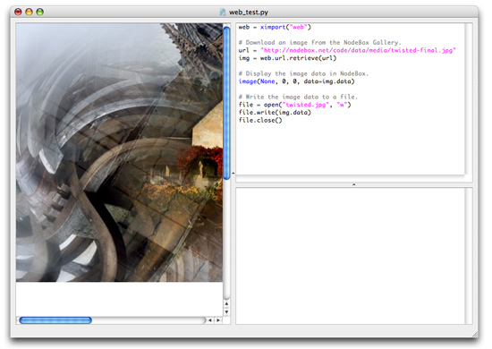
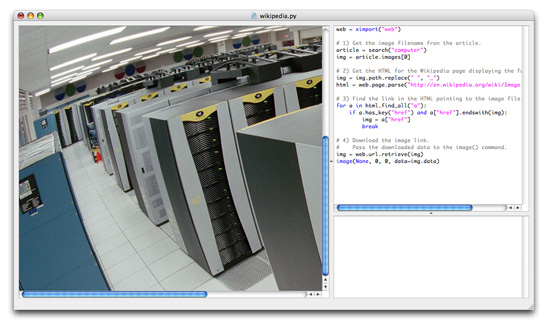
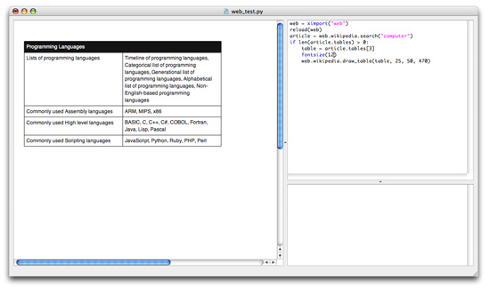
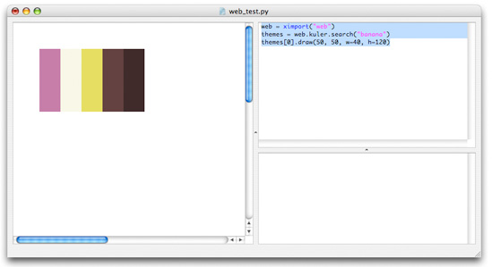
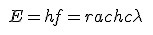
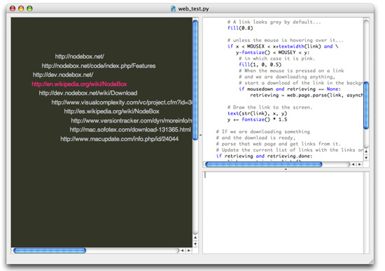

Description
The PlotDevice Web library offers a collection of services to retrieve content from the
internet. You can use the library to query Yahoo! for links,
images, news and spelling suggestions, to read RSS and Atom newsfeeds, to retrieve articles
from Wikipedia, to collect quality images from morgueFile or Flickr, to
get color themes from kuler or Colr, to browse through HTML documents, to clean up HTML, to validate
URL’s, to create GIF images from math equations using mimeTeX, to get ironic word definitions from Urban Dictionary.
The PlotDevice Web library works with a caching mechanism that stores things you download from the web, so they can be retrieved faster the next time. Many of the services also work asynchronously. This means you can use the library in an animation that keeps on running while new content is downloaded in the background.
The library bundles Leonard Richardson’s Beautiful Soup to parse HTM, Mark Pilgrim’s
Universal Feed Parser for newsfeeds, a connection to
John Forkosh’s mathTeX server (thanks Cedric Foellmi), Leif K-Brooks entity replace algorithm,
simplejson, and patches for Debian from the
people at Indywiki.
Download
| web.zip (390KB) Last updated for PlotDevice 1.9.4.6 Licensed under GPL Author: Tom De Smedt |
Documentation
- How to get the library up and running
- Validating web content
- Working with URL’s
- Working with HTML
- Querying Yahoo! for links, images and news
- Improving Yahoo! results with a contextual search
- Using Yahoo! to suggest spelling corrections
- Using Yahoo! to sort associatively
- Querying Google
- Reading newsfeeds
- Retrieving articles from Wikipedia
- Some helper commands to draw Wikipedia content in PlotDevice
- Querying morgueFile for images
- Querying Flickr for images
- Querying kuler for color themes
- Querying Colr for color schemes
- Creating GIF images from math equations
- Word definitions from Urban Dictionary
- Working with asynchronous downloads
- Clearing the cache
- Reading JSON
How to get the library up and running
Put the web library folder in the same folder as your script so PlotDevice can find
the library.
You can also put it in ~/Library/Application Support/PlotDevice/.
web = ximport("web")
Outside of PlotDevice you can also just do import web.
Proxy servers
If you are behind a proxy server the library may not be able to connect to the internet.
In that case you need to inform the library with the set_proxy() command:
web.set_proxy("https://www.myproxyserver.com:80", type="https")
Validating web content
Web content is accessed with a URL, the address you use to connect to a place on the internet. The library has a number of commands to find out what type of content (e.g. web page, image, ...) is associated with a given URL.
The most basic command, is_url() checks whether a given string is a grammatically correct URL (e.g. http://nodebox.net but not htp://nodebox.net). It takes a wait parameter indicating the number of seconds after which the library should stop connecting to the internet and give up.
web.is_url(url, wait=10)
Even if a URL is valid, it might not refer to actual content on the internet. We can check if a URL exists with the not_found() command:
web.url.not_found(url, wait=10)
The following commands are useful to find out what content is associated with the URL. We can discern between HTML web pages which we can parse with page.parse(), newsfeeds which we can parse with newsfeed.parse(), images, audio and video etc. which we can download with url.retrieve().
web.url.is_webpage(url, wait=10)
web.url.is_stylesheet(url, wait=10)
web.url.is_plaintext(url, wait=10)
web.url.is_pdf(url, wait=10)
web.url.is_newsfeed(url, wait=10)
web.url.is_image(url, wait=10)
web.url.is_audio(url, wait=10)
web.url.is_video(url, wait=10)
web.url.is_archive(url, wait=10)
Working with URL’s
A URL is the address you use to connect to a page on the internet, for example: http://nodebox.net. The PlotDevice Web library can do three different things with a URL: download the content associated with it, parse it (find out which parts make up the URL) and construct it from scratch (a simple way to create a URL with HTTP GET or HTTP POST data).
web.download(url, wait=60, cache=None, type=".html")
web.save(url, path="", wait=60)
web.url.retrieve(url, wait=60, asynchronous=False, cache=None, type=".html")
web.url.parse(url)
web.url.create(url="", method="get")
The download() command returns the content associated with the given web address. The command has an optional parameter wait that determines how long to wait for a download. If the time is exceeded, the download is aborted.
The last two parameters can be used to cache downloaded content locally, so it doesn’t have to downloaded again in the future. The cache parameter is a string with the name of a subfolder in /cache where to store content. The type parameter is the file extension of the downloaded content.
The save() command stores the URL’s content at the given local path. If no path is given it will attempt to extract a filename from the URL and store that in the current working directory. The path to the saved file is returned.
The Web library also has easier ways to deal with specific web content like HTML (page.parse() command) or Wikipedia articles (wikipedia.search() command) for example.
The download() command is actually an alias of the url.retrieve() command.
This command has an additional asynchronous parameter useful to download stuff in the
background while an animation keeps on running. We’ll see about asynchronous downloads
later on. The url.retrieve() command returns an object with a data property
containing a string with the downloaded content. If you don’t need anything that complicated
just use the easy download() command:
# Download an image from the PlotDevice Gallery. url = "http://nodebox.net/code/data/media/twisted-final.jpg" img = web.download(url) # Display the image data in PlotDevice. image(None, 0, 0, data=img) # Write the image data to a file. file = open("twisted.jpg", "w") file.write(img) file.close()

The url.parse() command splits a given url into its components. The returned objects has the following properties:
- url.protocol: the type of internet service, usually http
- url.domain: the domain name, for example, nodebox.net
- url.username: a username for a secure connection
- url.password: a password for a secure connection
- url.port: the port number at the host
- url.path: the subdirectory at the server, for example /code/index.php/
- url.page: the name of the document, for example search
- url.anchor: named anchor on the page
- url.query: a dictionary of query string values, for example { ‘q’: ‘pixels’
}
- url.method: the query string method either ‘get’ or ‘post’
In the same way the url.create() command returns an object with these properties. This command is useful to, for example, construct URL’s with a POST query and pass that to url.retrieve() or page.parse().
For example. this script retrieves the first 10 forum pages from PlotDevice:
url = web.url.create("http://nodebox.net/code/index.php/Share") url.query["p"] = 1 for i in range(10): print web.url.retrieve(url).data url.query["p"] += 1
Working with HTML
The PlotDevice Web library uses Leonard Richardson’s Beautiful Soup to parse HTML content. This means you can search and loop through all the tags in the HTML. For example, you might want to download a HTML page from the internet, find all the links in it and then download all those links. Or find all the image tags in the source and then retrieve all those images with download().
The page.parse() command takes a URL as input and returns a Beautiful Soup object. The optional cached parameter determines if downloaded pages should be cached locally for faster retrieval.
web.page.parse(url, wait=10, cached=True)
You can get the meta information in the HTML header with the returned object’s title, description and keywords properties:
html = web.page.parse("http://nodebox.net") print html.description >>> PlotDevice is a Mac OS X application that lets you create 2D visuals >>> (static, animated or interactive) using Python programming code >>> and export them as a PDF or a QuickTime movie. PlotDevice is free >>> and well-documented. print html.keywords >>>[u'PlotDevice', u'Home']
You can easily get all the links in the HTML with the links() method. It takes an optional external parameter which when True, returns only links to other domains/websites.
html = web.page.parse("http://nodebox.net/code/index.php/About") print html.links() >>> [u'http://research.nodebox.net', >>> u'http://www.opensource.org/licenses/mit-license.php', >>> u'http://www.python.org/', u'http://bert.debruijn.be/kgp/', >>> u'http://diveintopython.org/xml_processing/', >>> u'http://processing.org', >>> u'http://www.freelists.org/archives/the_posthumans/', >>> u'http://research.nodebox.net' >>> ]
The find_all() method returns a list of specific tags. The find() method just returns the first tag:
html = web.page.parse("http://nodebox.net/") print html.find("title").string >>> PlotDevice | Home titles = html.find_all("h2") for title in titles: print title.string >>> News >>> Current projects >>> Gallery favorites content = html.find(id="content") print web.html.plain(content) >>> Welcome to PlotDevice PlotDevice is a Mac OS X application >>> that lets you create 2D visuals (static, animated or interactive) >>> using Python programming code and export them as a PDF or >>> a QuickTime movie. PlotDevice is free and well-documented. >>> Read more >>> >>> Download PlotDevice for Mac OS X (version 1.8.5) Universal Binary >>> >>> Latest updates: >>> >>> * Interactivity >>> * Stop running scripts by hitting command-dot. >>> ...
As you can see you can supply tag names or attribute-value pairs to the find methods.
The find() and find_all() methods return Tag objects that each have find() and find_all() too. Alternatively, you can also find tags more directly, for example: html.body.p returns a list of all p tags.
html = web.page.parse("http://nodebox.net/") list = html.find(id="content").find("ul") print web.html.plain(list) >>> * Interactivity >>> * Stop running scripts by hitting command-dot. >>> * Transparent PDFs with the background() command. >>> * Fast, integrated path mathematics . >>> * Store libaries centrally in the Application Support folder. # These statements retrieve exactly the same. list = html.body(id="content")[0].ul list = html.body.ul
If you need to retrieve tags by their CSS classname, use the find_class() method.
To get attributes from a tag, address it as a dictionary:
html = web.page.parse("http://nodebox.net/") html.body.a["href"] # the first link's href attribute >>> Home
The PlotDevice Web library has various commands to clean up HTML.
# Replaces HTML special characters by readable characters. web.html.replace_entities(unicode, placeholder=" ")
# Removes all tags from HTML except those in the exclude list. web.html.strip_tags(html, exclude=[], linebreaks=False, blocks="\n", breaks="\n", columns="\n")
web.html.strip_javascript(html)
web.html.strip_inline_css(html)
web.html.strip_comments(html)
web.html.strip_forms(html)
# If there are 10 consecutive spaces, 9 of them are removed. web.html.collapse_spaces(str)
# Allow only a maximum of max linebreaks to build up. web.html.collapse_linebreaks(str, max=2)
# Converts tabs to spaces, optionally leaving the left indentation unmodified. web.html.collapse_tabs(str, indent=False)
# Combines all of the above. web.html.plain(html)
Querying Yahoo! for links, images and news
Before you can use the Web library to query the Yahoo! search engine, you need to obtain a license key: http://developer.yahoo.com/search/
Click ‘get an application ID’. Fill out the form and you’ll end up with a long string
of numbers and characters which is your Yahoo! license key. It entitles you to 5000 queries a
day. Now register your license key in your PlotDevice script:
web.yahoo.license_key("myID") print web.yahoo.license_key() >>> myID
Note that you can query Yahoo! without setting a license key, in which case you are using a default key that you share with all the other PlotDevice users who work with the Web library.
Use the yahoo.search(), yahoo.search_images() and yahoo.search_news() commands to query Yahoo! for links to relevant webpages/images/news:
web.yahoo.search(q, start=1, count=10, context=None, cached=False)
web.yahoo.search_images(q, start=1, count=10, cached=False)
web.yahoo.search_news(q, start=1, count=10, cached=False)
The commands take a q query parameter, and optional start, count and cached parameters. The start parameter defines the first link to return, count defines the total amount of links to return. The cached parameter defines if Yahoo queries are cached locally (so they can be retrieved faster in the future).
results = web.yahoo.search("plotdevice", start=1, count=5, cached=False) for item in results: print item.title >>> PlotDevice | Home >>> PlotDevice | Features >>> visualcomplexity.com | PlotDevice >>> PlotDevice - Wikipedia, the free encyclopedia >>> Nodebox - SWiK
Each item in the list of results is a YahooResult object with the following properties:
- result.url: the URL of the linked page
- result.title: the title of the linked page
- result.description: a short description for the page
- result.type: the MIME-type of the linked page
- result.date: the modification date of the linked page
- result.width: for images, the width in pixels
- result.height: for images, the height in pixels
- result.source: for news items, the source of the article
- result.language: for news items, the language used
The list of results has a total property containing the total number of results Yahoo! has for your query:
print results.total >>> 37200
Improving Yahoo! results with a contextual search
Suppose you are querying Yahoo! for apple. Most likely Yahoo! will return links to pages relating to the Apple Computer company. But perhaps you wanted links to apples as in fruit. The yahoo.search() command has an optional context parameter which you can supply a description of what you mean exactly with apple:
ctx = ''' The apple tree was perhaps the earliest tree to be cultivated, and apples have remained an important food in all cooler climates. To a greater degree than other tree fruit, except possibly citrus, apples store for months while still retaining their nutritive value. We are not looking for a company named Apple. ''' results = web.yahoo.search("apple", count=5, context=ctx) print r.total for item in results: print item.title >>> Apple - Wikipedia, the free encyclopedia >>> Apple Core >>> Apple - Free Encyclopedia >>> Apple : Apple (fruit) >>> About the Apple -- Fruit
Using Yahoo! to suggest spelling corrections
To get spelling suggestions from Yahoo, use the yahoo.suggest_spelling() command. It returns a list of suggested spelling corrections:
corrections = web.yahoo.suggest_spelling ("amazoon", cached=False) print corrections >>> ['amazon']
Using Yahoo! to sort associatively
You can use Yahoo! to sort concepts according to association. Is sky more green, red or blue?
colors = ["green", "blue", "red"] sorted = web.yahoo.sort(colors, "sky", strict=False, cached=True) for word, weight in sorted: print word, weight >>> blue sky 0.396039408425 >>> red sky 0.33604773392 >>> green sky 0.267912857655
In this example, Yahoo! is queried for green sky, blue sky and red sky. The result is a sorted list of (query, weight) tuples. We learn that blue is the color best associated with sky.
The Prism algorithm roughly works in this way.
Querying Google
You can run Google queries in the same way as querying Yahoo!.
The library has the following commands available:
web.google.search(q, start=0, cached=False)
web.google.search_images(q, start=0, size="", cached=False)
web.google.search_news(q, start=0, cached=False)
web.google.search_blogs(q, start=0, cached=False)
web.google.sort(words, context="", strict=True, cached=False)
The search commands return a list of results. This list has an additional total property. Each item in the list is a GoogleResult object with the following properties:
- result.url: the URL of the linked page
- result.title: the title of the linked page
- result.description: a short description for the page
- result.date: for news and blogs search
- result.author: for news and blogs search.
- result.location: for news search.
Per search, a list of 8 items is returned from the given start item. Google will only ever return the first 32 results, so the maximum value for start is 24.
When searching for images, the results can be filtered for image size with the
optional size parameter.
Acceptable values are ‘small’, ‘medium’, ‘large’ and ‘wallpaper’.
Reading newsfeeds
The newsfeed.read() command returns information from RSS or Atom newsfeeds as a collection of news items with a title, link, description, and more.
web.newsfeed.parse(url, wait=10, cached=True)
The returned newsfeed object has the following properties:
- newsfeed.title: the title of the newsfeed
- newsfeed.description: a short description for the newsfeed
- newsfeed.link: a link to the homepage of the news channel
- newsfeed.date: a publication date of the news channel
- newsfeed.encoding: the text encoding used (usually Unicode)
- newsfeed.items: a list of news items
The items property is a list in which each item object has properties of its own:
- item.title: the title of the news item
- item.link: a link to the full article online
- item.description: a short description of the news item
- item.date: the publication date of the news item
- item.author: the author of the news item
newsfeed = web.newsfeed.parse"http://www.whitehouse.gov/rss/news.xml") print "Channel:", newsfeed.title print "Channel description:", newsfeed.description for item in newsfeed.items: print "Title:", item.title print "Link:", item.link print "Description", item.description print "Date:", item.date print "Author:", item.author
There are other properties as well, like item.date_parsed, item.author_detail and
item.author_detail.email. See the Universal Feed
Parser documentation for more information.
The address of some well-known newsfeeds can be found in the newsfeed.favorites dictionary or with the newsfeed.favorite_url() command:
print web.newsfeed.favorite_url("apple") >>> http://images.apple.com/main/rss/hotnews/hotnews.rss
Retrieving articles from Wikipedia
Wikipedia is a multilingual, web-based, free content encyclopedia project. Wikipedia is written collaboratively by volunteers; the vast majority of its articles can be edited by anyone with access to the Internet.
The wikipedia.search() command retrieves articles from Wikipedia. It parses an article corresponding to the given query into lists of related articles and paragraphs of plain text without any HTML or other markup in it:
web.wikipedia.search(q, language="en", light=False, wait=10, cached=True)
The command takes a q query parameter and, optionally, the language the article should be written in. When light is True, only a title, links to other articles, categories and disambiguation will be parsed from the article (it’s faster than a full parse).
Note that the q parameter is case-insenstive - this gives the best chance of
retrieving an article.
If you do want case-sensitivity use search(q, case_sensitive=True).
The return value is an article object with the following properties:
- article.title: the title of the article
- article.links: a list of titles of related articles
- article.categories: a list of categories this article belongs to
- article.disambiguation: a list of article titles describing other interpretations of the query
- article.paragraphs: a list of paragraph objects
(WikipediaParagraph)
- article .images: a list of image objects (WikipediaImage)
- article.tables: a list of table objects (WikipediaTable)
- article.references: a list of reference objects (WikipediaReference)
- article.translations: a dictionary of language keys linking to title
translations
- article.important: important phrases that appear in bold in the online
article
- article.markup: the source text of the article in MediaWiki markup
Article links
Each of the titles in the article.links list can be supplied to wikipedia.search() to get more information on that topic.
article = web.wikipedia.search("plotdevice") print article.title print article.links >>> PlotDevice >>> [u'2007', u'2D computer graphics', u'Adobe Photoshop', u'Animation', >>> u'CMYK', u'Computer animation', u'Core Image', u'DrawBot', >>> u'February 27', u'Graphic design', u'HSV color space', >>> u'MIT License', u'Mac OS X', u'OpenGL', u'Portable Document Format', >>> u'PostScript', u'Processing (programming language)', >>> u'Python (programming language)', u'QuickTime', u'RGB', u'SVG', >>> u'WordNet', u'alpha transparency', u'artificial intelligence', >>> u'collage', u'graphic design' >>> ]
Article paragraphs
Each paragraph object in article.paragraphs is a list of plain text blocks. Furthermore, a paragraph has a number of properties. This code snippet loops through all the paragraphs:
article = web.wikipedia.search("plotdevice") for paragraph in article.paragraphs: # A paragraph's depth determines # if it's a subparagraph or a top-level paragraph. if paragraph.depth <= 1: print "="*100 else: print "-"*100 print paragraph.title + "\n" # Each paragraph is a list of separate blocks of text: for textblock in paragraph: print textblock + "\n"
To display a paragraph with the text() command you can loop over all the textblocks individually:
fontsize(10) x, y, w = 20, 20, 300 for textblock in article.paragraphs[0]: text(textblock, x, y, width=w) y += textheight(textblock, width=w) + 10
Or simply use the Python str() command on the entire list:
text(str(article.paragraphs[0]), 20, 20, width=300)
A paragraph object has the following properties:
- paragraph.title: the title or heading of this paragraph
- paragraph.depth: the depth of the paragraph
- paragraph.parent: a WikipediaParagraph object containing this subparagraph
- paragraph.children: a list of sub-WikipediaParagraph objects
- paragraph.main: a list of article titles whose contents describe this paragraph in detail
- paragraph.related: more article titles that have related contents
- paragraph.tables: a list of WikipediaTable objects found in this
paragraph
Article images
Image objects in the article.images list have properties (like a description) that can help in discerning what is being displayed in the image:
article = web.wikipedia.search("computer") for img in article.images: print img.description >>> The NASA Columbia Supercomputer. >>> A computer in a wristwatch. >>> The Jacquard loom was one of the first programmable devices. >>> ...
An image object has the following properties:
- image.path: the image’s filename
- image.description: a description parsed from the source content
- image.links: a list of related article titles
- image properties: a list of properties parsed from the source (e.g. left,
thumb, ...)
Finally, here is a little web mash-up to draw article images in PlotDevice:
# 1) Get the image filename from the article. article = web.wikipedia.search("computer") img = article.images[0] # 2) Get the HTML for the Wikipedia page displaying the full-size image img = img.path.replace(" ", "_") html = web.page.parse("http://en.wikipedia.org/wiki/Image:"+img) # 3) Find the link in the HTML pointing to the image file. for a in html.find_all("a"): if a.has_key("href") and a["href"].endswith(img): img = a["href"] break # 4) Download the image link. # Pass the downloaded data to the image() command. img = web.download(img) image(None, 0, 0, data=img)

Article tables
Tables parsed from an article can be accessed from the article.tables list or from article.paragraph[i].tables. A table object is a list of rows. Each row is a list of cells:
article = web.wikipedia.search("computer") table = article.tables[0] print table.paragraph.title print table.title, "("+table.properties+")" for row in table: print "-"*50 print row.properties for cell in row: print cell, "("+cell.properties+")"
As you can see, tables, rows and cells all have properties. Tables also have a title property and a paragraph property linking to the paragraph object in which this table was found.
Article references
Text blocks in a Wikipedia paragraph can contain numerous references to websites, journal and footnotes. They are marked as a number between square brackets, e.g. [15].
For example:
>>> A key component common to all CPUs is the program counter, >>> a special memory cell (a register) that keeps track of which >>> location in memory the next instruction is to be read from. [11]
corresponds to article.references[10] - keeping in mind that list indices start from 0:
print article.references[10] >>> Instructions often occupy more than one memory address, >>> so the program counters usually increases by the number of >>> memory locations required to store one instruction
Each reference object in the article.references list has a number of properties. In the worst case all of the information is stored in reference.note, in the best case the reference has data for all of the folllowing properties:
- reference.title: a title of a publication
- reference.url: a link to a web page
- reference.author: the author of a publication
- reference.first: the author’s first name
- reference.last: the author’s last name
- reference.journal: the journal in which the article is published
- reference.publisher: the journal’s publisher
- reference.date: publication date
- reference.year: publication year
- reference.id: an ISBN book number
- reference.note: footnotes and descriptions
Article translations
Here’s an example script how to get the translated version of an article:
article = web.wikipedia.search("computer") language = "fr" if article.translations.has_key(language): translation = article.translations[language] article = web.wikipedia.search(translation, language) print article.title >>> Ordinateur
The dictionary of all languages used in Wikipedia:
print web.wikipedia.languages
Some helper commands to draw Wikipedia content in PlotDevice
A number of commands in the library can help you find out how to display content from Wikipedia in PlotDevice. There are commands to draw lists, math equations and tables.
# Returns True if a given text block str in a paragraph # is preformatted text, e.g. a programming code example. web.wikipedia.is_preformatted(str)
# Returns True if a text block in a paragraph is a (numbered) list. web.wikipedia.is_list(str)
# Returns True if a text block in a paragraph is a math equation. web.wikipedia.is_math(str)
# Draws a list text block at x, y coordinates in PlotDevice. web.wikipedia.draw_list(str, x, y, w, padding=5, callback=None)
# Use mimeTeX to draw an image of a math equation at x, y. web.wikipedia.draw_math(str, x, y, alpha=1.0)
# Draws WikipediaTable object in PlotDevice; works very poorly. web.wikipedia.draw_table(table, x, y, w, padding=5)

Querying morgueFile for images
morgueFile contains photographs freely contributed by many artists to be used in creative projects by visitors to the site.
The morguefile.search() command returns a list of images on morgueFile that correspond to a given query. It has an optional parameter max specifying the maximum number of images to return:
web.morguefile.search(q, max=100, wait-10, cached=True)
web.morguefile.search_by_author(q, max=100, wait=10, cached=True)
Each image object in the returned list has the following properties:
- img.id: the unique morgueFile ID for the image
- img.category: the category the image belongs to
- img.author: the name of the author
- img.name: the image’s name
- img.url: the URL of the image thumbnail
img.width: the image width in pixels - img.height: the image height in pixels
- img.date: the date the image was added to morgueFile
images = web.morguefile.search("leaf", max=10) for img in images: print img.name, img.views >>> IMG_1662_d.JPG >>> fedegrafo_100_0221.jpg >>> cha827.jpg >>> Filiford_P1010003.JPG >>> IMG_8336.jpg >>> CIMG0012_s.JPG >>> Target_spot_disease_on_maple.JPG >>> IMG_1664.JPG >>> bumpy_leaf.JPG >>> Aztec_Grass.JPG
Each image object in the list has a download() method that stores the image file locally in cache. It has an optional parameter size, which can be set to ‘small’ (image thumbnail) or ‘large’ (default):
img = images[0] img.download(size="large", wait=60) image(img.path, 0, 0, width=img.width, height=img.height) print img.author, img.path >>> Filiford cache/morguefile/240060eb1e1a0628ae32aff811b167ef.JPG

Querying Flickr for images
Flickr is an online photo management and sharing
application.
You can query it for images in the same way as querying morgueFile.
web.flickr.search(q, start=1, count=100, wait=10, cached=True)
web.flickr.recent(start=1, count=100, wait=10, cached=True)
The flickr.search() command has two optional parameters: sort and match. The sort order can be set either to ‘interest’, ‘relevance’ (default) or ‘date’. The match parameter can be either ‘all’ (image tags must include all of the search words) or ‘any’ (default).
Each image object in the returned list has a download() method like the morgueFile
interface. The download() method has an optional size parameter which can be
‘square’, ‘small’, ‘medium’, ‘large’ and ‘wallpaper’. This way you can specify the size of the
image to download.
Querying kuler for color themes
kuler is an Adobe web-application that allows users to construct and share color themes.
The kuler.search() command returns a list of color themes on kuler that correspong to a given query. It has an optional page parameter defining the starting page (each page has 30 themes).
web.kuler.search(q, page=0, wait=10, cached=True)
web.kuler.search_by_id(id, page=0, wait=10, cached=True)
web.kuler.search_by_popularity(page=0, wait=10, cached=True)
web.kuler.search_by_rating(page=0, wait=10, cached=True)
Each theme object in the returned list has the following properties:
- theme.id: the unique kuler id for the theme
- theme.author: the name of the author
- theme.label: the title of the theme
- theme.tags: a list of keywords for a theme found with kuler.search_by_id()
- theme.darkest: a tuple of (R, G, B) values for the darkest color in the theme
- theme.lightest: a tuple of (R, G, B) values the lightest color in the theme
You can loop through a theme object as a list. Each item in the theme is a tuple of (R, G, B) values, which you can supply to fill() or stroke() in PlotDevice.
themes = web.kuler.search("banana") for r, g, b in themes[0]: print r, g, b # The kuler.preview() command gives you an idea of the theme's colors. web.kuler.preview(themes[0])

Each theme also has a draw() method that displays the colors in the theme in PlotDevice:
themes = web.kuler.search("banana") themes[0].draw(50, 50, w=40, h=120)

Querying Colr for color themes
Colr is an online tool by Lloyd Dalton to let people
fiddle around with colors.
You can query it for color themes in the same way as querying kuler.
web.colr.search(q, page=0, wait=10, cached=True)
web.colr.search_by_id(id, page=0, wait=10, cached=True)
web.colr.latest(page=0, wait=10, cached=True)
web.colr.random(page=0, wait=10, cached=True)
You can manipulate each theme object in the returned list as with the kuler interface.
Creating PNG or GIF images from math equations
John Forkosh has a mathTeX server that creates PNG or GIF images from math equations.
web.mathtext.png(equation, dpi=120, color="")
web.mathtext.gif(equation, dpi=120, color="")
The optional dpi parameter sets the image resolution, while color can be the name of a primary color (e.g. blue, green, red, ...)
equation = r"E = hf = \frac{hc}{\lambda} \,\! " img = web.mathtex.gif(equation) image(img, 0, 0)

Word definitions from Urban Dictionary
Urban Dictionary is a slang dictionary with user-defined description for words. You can often get some humorous (or cruel and childish) results from it.
The urbandictionary.search() command returns a list of definitions for a given word.
web.urbandictionary.search(q, cached=True)
Each definition object in the returned list has the following properties:
- definition.description: a description of the given word
- definition.example: example usage of the word in a sentence
- definition.author: the author who came up with the definition
- definition.links: a list of words linked to the definition
- definition.url: the web page where the definition can be found
definitions = web.urbandictionary.search("life") print definitions[0].description >>> A sexually-transmitted, terminal disease.
Working with asynchronous downloads
Downloading content from the internet may take a moment to complete. When running an animation in PlotDevice, you don’t want it to halt while PlotDevice waits for the download to complete. The Web library offers you the capability to download asynchronously. NodeBox will then continue running with the download taking place in the background memory. Once it is done you can start manipulating the retrieved data.
The url.retrieve() command has some optional parameters to do asynchronous downloads:
web.url.retrieve(url, wait=60, asynchronous=False, cache=None, type=".html")
With asynchronous set to True, the download will occur in the background. The returned object has a done property which is True when downloading has terminated. The object’s data property then contains the source data.
You can also set a wait amount of seconds that is the maximum amount of time PlotDevice will connect to the internet. When the limit is exceeded and no data was fully recovered, the returned object will have an error property set. When something else went wrong error will be set as well by the way, usually with a URLTimeout, a HTTPError or a HTTP404NotFound exception.
data = web.url.retrieve("http://nodebox.net", asynchronous=True) import time while not data.done: time.sleep(0.1) print "downloading..." print "done!" >>> downloading... >>> downloading... >>> downloading... >>> downloading... >>> done!
Since all of the services in the Web library build upon url.retrieve(), you can also use the asynchronous parameter with page.parse(), yahoo.search(), newsfeed.parse(), wikipedia.search(), morguefile.search(), morguefile_image.download() and kuler.search().
An exception is the Urban Dictionary which uses SOAP instead of url.retrieve().
Here’s a quick mash-up of an interactive link browser. It starts out with some links from Yahoo! and when you click on a link, it displays the links in that web page, and so on.
from math import sin import web # Get links from Yahoo! links = web.yahoo.search("plotdevice") from_yahoo = True retrieving = None speed(20) def draw(): global links, from_yahoo, retrieving background(0.2, 0.2, 0.15) y = 100 fontsize(15) # Traverse the current list of links. for link in links: # Wave each line of text horizontally. x = 100 + sin(FRAME*y/5000.0)*50 # Yahoo!, our starting point, # has links in a slightly different format. if from_yahoo: link = link.url # A link looks grey by default... fill(0.8) # unless the mouse is hovering over it... if x < MOUSEX < x+textwidth(link) and \ y-fontsize() < MOUSEY < y: # in which case it is pink. fill(1, 0, 0.5) # When the mouse is pressed on a link # and we are not downloading anything, # start a download of the link in the background. if mousedown and retrieving == None: retrieving = web.page.parse(link, asynchronous=True) # Draw the link to the screen. text(link, x, y) y += fontsize() * 1.5 # If we are downloading something # and the download is ready, # parse that web page and get links from it. # Update the current list of links with the links on this page. if retrieving != None and retrieving.done: links = retrieving.links() from_yahoo = False # We are done downloading. retrieving = None # We are busy downloading. if retrieving != None and not retrieving.done: fill(1, 1, 0) text("please wait....", 10, 20)

Clearing the cache
Most of the content you retrieve with the Web library is cached for faster retrieval in the
future. At some point you may want to empty the cache (it can grow quite large). This is easy -
to erase the cache completely just do:
web.clear_cache()
To clear individual caches:
web.yahoo.clear_cache() web.wikipedia.clear_cache() web.morguefile.clear_cache() # etc... clear_cache() is available for each service in the library
Reading JSON
JSON (JavaScript Object Notation) is a lightweight data-interchange format. If you have some JSON data you need to parse into a Python dictionary you can use the bundled and super-easy library by Patrick D. Logan:
colr_data = web.json.read(colr_data) for theme in colr_data["schemes"]: theme_id = theme["id"]
The PlotDevice Web library addresses the following API’s:
- Yahoo!: http://developer.yahoo.com/search/
- Wikipedia: http://www.mediawiki.org/wiki/API
- morgueFile: http://www.morguefile.com/wiki/index.php/Morguefile_api
- Flickr: http://www.flickr.com/services/api/
- kuler: http://deliciouslymeta.com/kuler/k_docs.php
- Colr: http://www.colr.org/api.html
- mimeTeX: http://www.forkosh.com/mimetex.html
- Urban Dictionary: http://www.urbandictionary.com/api.php